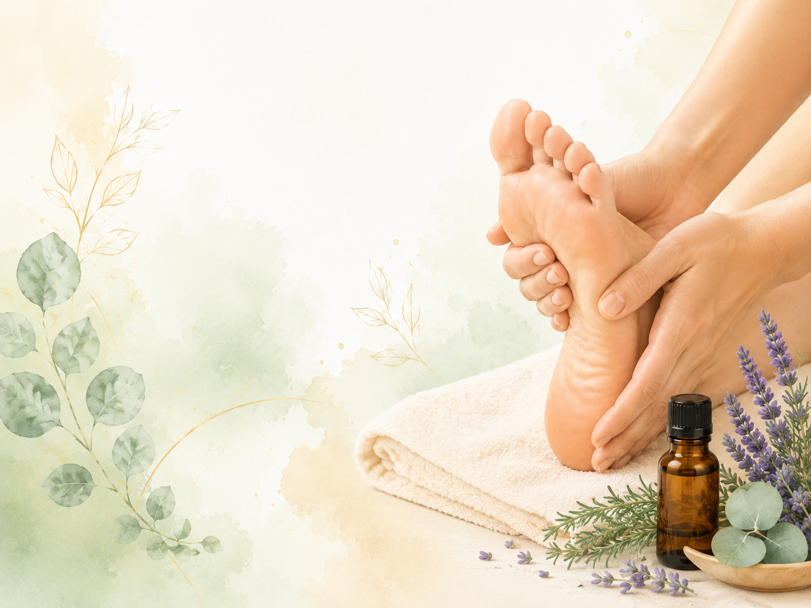

01
TOUCH
足裏に触れる
手のひらや指を使って、 足裏全体にやさしく触れます。
REFLEXOLOGY
足裏や足元に触れながら、 自分のためのセルフケア時間をつくる。
強く押すことよりも、 「心地よい」と感じることを大切に。 初心者でも取り入れやすい方法を紹介します。

このページで分かること
BEGINNER GUIDE
リフレクソロジーは、 足裏や足元に触れながら、 自分をいたわる時間をつくるケアのひとつです。
セルフケアとして取り入れる場合は、 強く押しすぎず、 自分が心地よいと感じる範囲で行うことが大切です。
特別な道具がなくても、 手で足裏全体に触れるところから 始めることができます。
SELF CARE
無理をせず、 自分が気持ちよいと感じる範囲で。
手のひらや指を使って、 足裏全体にやさしく触れます。
足指をゆっくり開いたり閉じたりして、 足元をリフレッシュします。
無理のない範囲で、 足首をゆっくり動かします。
好きな香りを楽しみながら、 足元をいたわる時間をつくります。
REFLEX ZONES
リフレクソロジーでは、 足のさまざまな場所が 身体の各部位に対応すると考えられています。
反射区の位置は流派やフットマップによって 少しずつ異なります。 ここでは一般的な位置を目安として紹介します。
病気の診断や治療を目的とするものではなく、 足元のセルフケアを楽しむための参考として ご覧ください。
一般的な反射区の考え方では、 足の親指が頭部に対応し、 親指の付け根周辺が首まわりに 対応するとされています。
両足
親指全体を包むように触れたあと、 親指の腹で付け根周辺を ゆっくりとやさしく刺激します。
一般的なフットマップでは、 人差し指から小指にかけての 足指周辺に、目や耳に対応するとされる 反射区があります。
両足
足指を一本ずつやさしくつまみ、 指の付け根周辺を 小さく押すように刺激します。
一般的な反射区では、 足指の付け根から足裏上部にかけての エリアが肩や胸まわりに 対応するとされています。
両足
足指の付け根の下を、 親指の腹で外側から内側へ ゆっくり移動しながら刺激します。
足指の付け根の下にある 足裏上部のふくらみは、 一般的なフットマップで 胸部に対応するエリアとされています。
基本は両足。 心臓に対応するとされる反射区は、 一般的に左足側に示されます。
足裏上部のふくらみに 親指の腹を当て、 痛くない程度の力でゆっくり刺激します。
一般的なフットマップでは、 土踏まずの上部から中央付近に 胃や膵臓、十二指腸などに 対応するとされる反射区があります。
両足に消化器系の反射区がありますが、 臓器によって左右の位置が異なると されるものがあります。
土踏まずの上部から中央を、 親指の腹で小さく移動しながら ゆっくり刺激します。
一般的な反射区の考え方では、 右足の土踏まず上部から 外側寄りに、肝臓や胆のうに対応するとされる エリアがあります。
主に右足
右足の土踏まず上部を、 親指の腹でゆっくりと 面をなぞるように刺激します。
腎臓に対応するとされる反射区は 一般的に土踏まずの中央付近、 膀胱はそこからかかと寄りの 内側付近に示されます。
両足
土踏まず中央から かかとの内側方向へ、 親指の腹でゆっくりたどるように刺激します。
一般的なフットマップでは、 土踏まずの中央から かかと寄りの広いエリアに、 小腸・大腸の反射区が示されています。
両足
土踏まずの中央から下側を、 親指の腹で少しずつ場所を変えながら やさしく刺激します。
背骨に対応するとされる反射区は、 足の内側のラインに沿って 親指側からかかと方向へ続く形で 示されることが一般的です。
両足の内側
足の内側を親指の腹で支えながら、 親指側からかかと方向へ ゆっくりとなぞるように触れます。
一般的な反射区では、 かかと周辺が骨盤や 下半身のエリアに対応するとされています。
両足
かかとを手のひらで包み、 指の腹を使って 広い範囲をゆっくり刺激します。
※反射区の位置や名称には流派による違いがあります。 痛みや不調が続く場合は、反射区への刺激だけで判断せず、 必要に応じて医療機関へ相談してください。
SIMPLE STEP
4つの流れで、 ゆっくり足元をいたわります。
椅子や床など、 無理なく足に触れられる姿勢になります。
かかとから足指まで、 足裏全体を包むようにやさしく触れます。
強く押し込む必要はありません。 自分が心地よいと感じる程度で十分です。
セルフケアが終わったら、 少し足元を休ませてゆったり過ごします。
REFLEXOLOGY × AROMA
足元をいたわる時間に、 好きな香りを取り入れる。
香りとセルフケアを組み合わせることで、 毎日のケア時間を 少し楽しみにできるかもしれません。
アロマについて見るSELF CARE ITEMS
足裏を転がしながら 手軽にセルフケアしたいときに。
足裏に転がして使いやすい、 シンプルなセルフケアアイテムです。
足元を休ませたり、 やさしく包んだりするときに。
足元に触れる時間を、 より心地よく楽しみたいときに。
FOOT CONCERNS
足の疲れ、むくみ、冷え、 立ち仕事など、 気になる悩み別にセルフケアを紹介しています。
足元のセルフケアは、 無理をせず心地よい範囲で行いましょう。
強い痛みや腫れ、しびれなどが続く場合は、 セルフケアだけで済ませず、 必要に応じて医療機関へ相談してください。